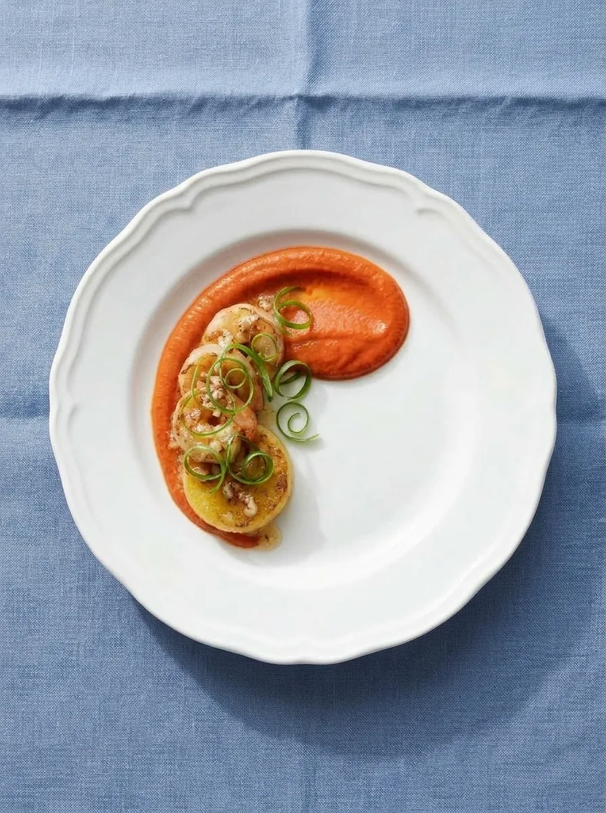
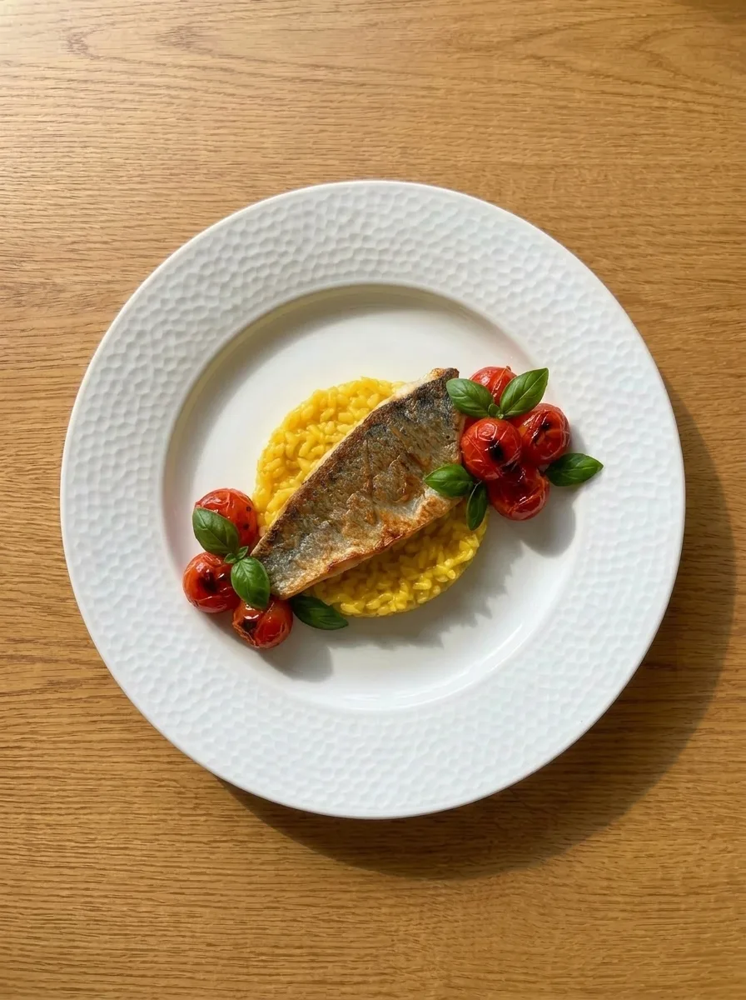
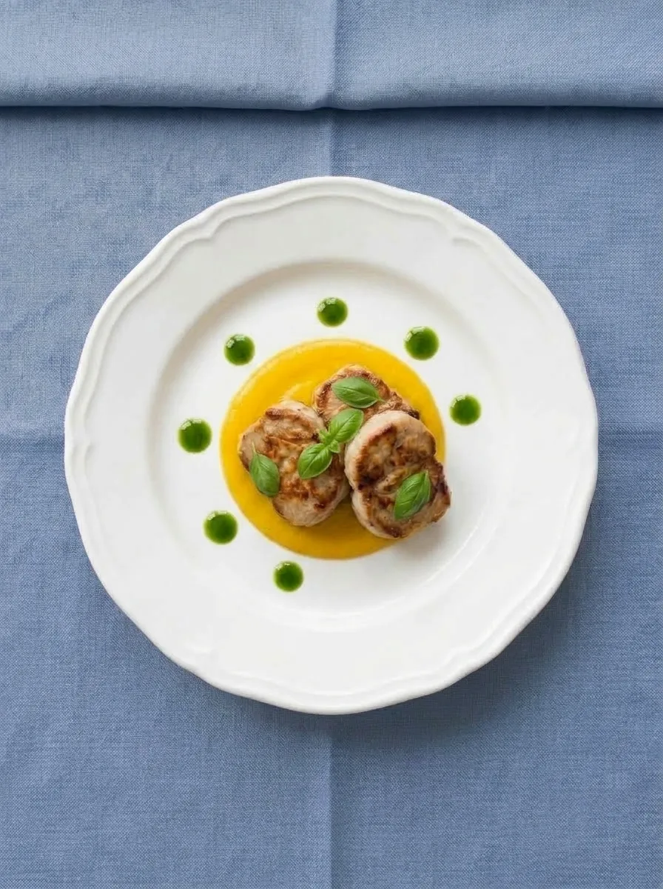

Free on iPhone
Cook what you have. Love what you make.
Snap your ingredients and get a recipe you can make tonight. Want to impress? Chef It Up for restaurant-style plating, step by step.
Download on the App StoreThree free recipes to start · No account needed
On a computer? Point your iPhone camera here to get Nibble.



Dinner in three taps
- SnapTake a photo of your fridge or counter.
- CheckConfirm the ingredients Nibble found.
- CookFollow a recipe with built-in step timers.